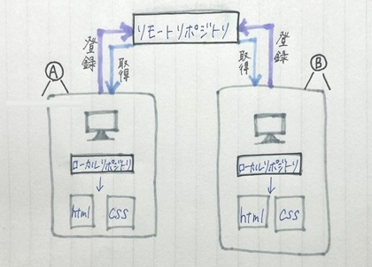
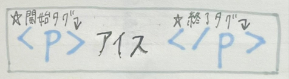
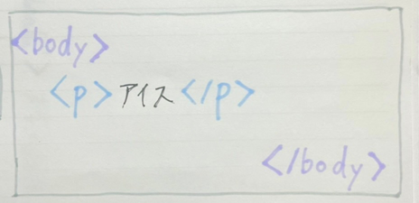
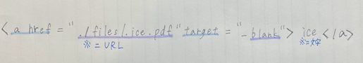

デザイン演習 第1回
－Gitについて－
★Git…
ファイルのバージョン（履歴）管理を楽にできるツールである分散型バージョン管理システムのことである。
例えば、 デザインなどのデータを複数の作業者が編集している場では、どのファイルを編集すればよいかわからなくなる。
Gitはこのような問題を解決するシステムであり、「いつ、だれが、どのように変更したか」といった変更履歴とともにファイルを保存することができる。
★Gitを使うメリット
- 古いバージョンから新しいバージョンのファイルまで管理できる
- 簡単に古いバージョンに戻せる
- チームでファイルや変更履歴をスムーズに共有できる
- 豊富な機能を使いチームでの共同開発を効率化できる
★リポジトリとは
ファイルやフォルダなどの情報の「保管場所」。
サーバー上にある保存先のこと⇢リモートリポジトリ
自分のパソコン上にある保存先のこと⇢ローカルリポジトリ
＜作業時＞リモートリポジトリからローカルリポジトリへダウンロードする
＜作業終了＞リモートリポジトリへアップデートし、変更履歴を残す

活用することで複数人での作業を同時進行で行える〇
－Htmlについて－
★Html…
「ハイパーテキスト・マークアップ・ランゲージ」の略。
Webページを作成するための言語。
★Htmlの基本用語
＜タグ＞表示形式と範囲を指定する

この場合の表示タグ＝段落を定義する＜ｐ＞タグ
＜要素＞タグとテキストを情報を合わせたページ上の部品

＜属性＞タグに性質を与える
